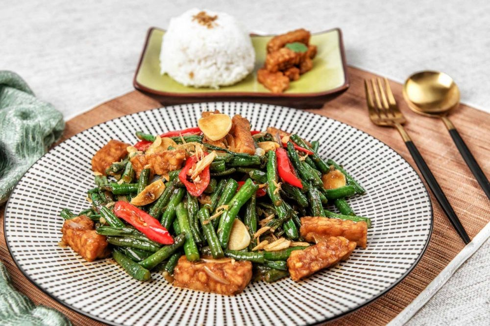

Tumis Kacang Panjang

Deskripsi
Tidak ada yang pernah salah dengan Tumis Kacang Panjang. Terbuat dari kacang panjang yang ditumis dengan bawang merah dan putih, cabai merah, dan tempe sebagai rasa dan tekstur tambahan. Hidangan yang sederhana namun sehat dan lezat.
Tingkat kesulitan: Mudah
Preparasi: 30 menit
Waktu memasak: 15 menit
Waktu membersihkan: 10 menit
Bahan-bahan (2-4 Porsi)
- 500g Kacang Panjang
- 100g Tempe
- 30g Bawang Merah
- 20g Bawan Putih
- 15g Kering Udang
- 70g Cabe Merah Besar
- 50ml Minyak Goreng
- 5g Garam
- 4g Lada Putih Bubuk
- 19g Saus Tiram
- 40g Kecap Manis
- 200ml Air
Langkah-langkah
- Potong-potong kacang panjang sepanjang 4cm lalu cuci hingga bersih.
- Potong tempe sepanjang 4cm meter dengan ketebalan 1cm.
- Haluskan bahan: Bawang Merah, Bawan Putih, Kering Udang dan Cabe Merah Besar sampai halus.
- Lalu tumis bumbu dengan api sedang hingga bumbu matang, setelah bumbu matang masukan air aduk hingga rata dan masak kembali hingga mendidih.
- Masukan kacang panjang dan tempe aduk rata dan tambahkan seasoning: Garam, Kaldu Ayam Bubuk, Lada Putih Bubuk, Sauce Tiram dan Kecap Manis lalu masak kacang panjang selama 15 menit lalu angkat dan sisihkan.
Sumber: Asian Food Network